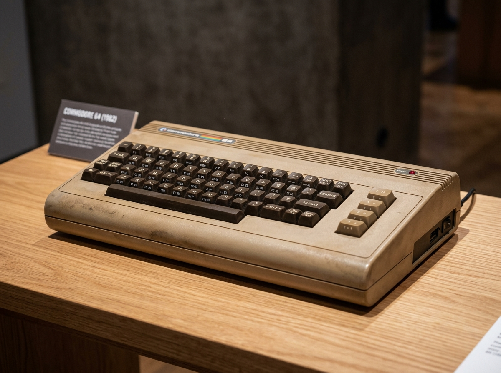
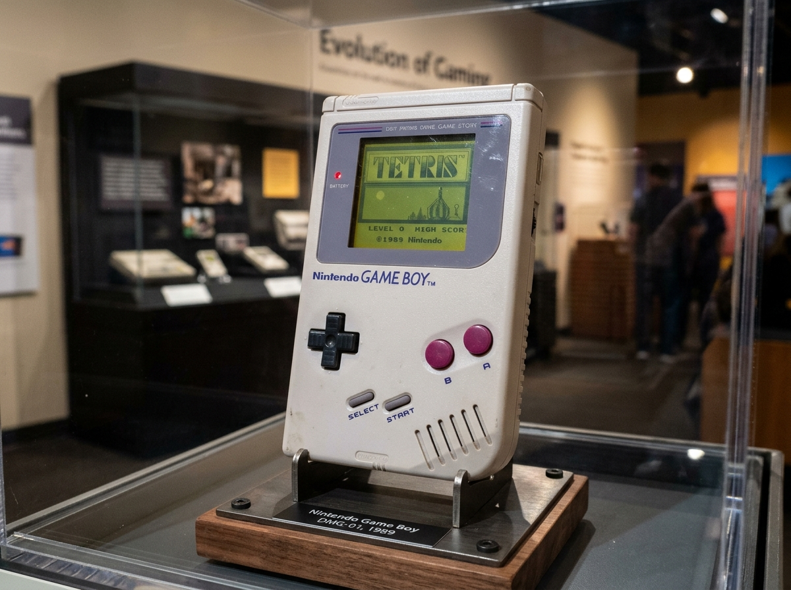
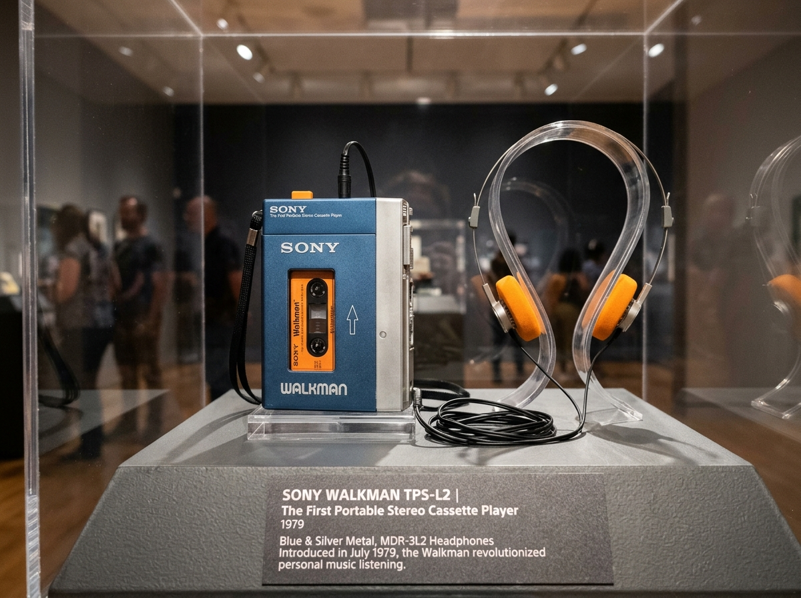

1982
COMPUTERS

Commodore 64
The best-selling single computer in human history with over 17 million units sold. Packed with the iconic 3-voice SID synthesizer chip.
Immerse yourself in authentic silicon history. Experience the tactile clack of mechanical keyboards, the hypnotic scanlines of CRT monitors, and the revolutionary hardware that propelled humanity from punch cards to cyberspace.
*** RETRO TECH MUSEUM OS V1.0 ***
64K RAM SYSTEM 38911 BYTES FREE
READY.
LOAD "EXHIBIT_TOUR",8,1
SEARCHING FOR SILICON PIONEERS...
LOADING COMPLETE.
RUN
Pivotal milestones that altered history forever

The best-selling single computer in human history with over 17 million units sold. Packed with the iconic 3-voice SID synthesizer chip.

Engineered with 4-shade olive green screen and 30-hour battery life. Bundled with Tetris, it sparked a global portable gaming revolution.

The world's first portable stereo cassette player that gave people a personal soundtrack in public. Precursor to iPods and modern streaming.
Before silicon chips, visionary women wrote the mathematical foundations of software. Discover Ada Lovelace's first algorithm in 1843, Rear Admiral Grace Hopper's first English-language compiler, and Margaret Hamilton's Apollo 11 flight software.
VISIT PIONEER GALLERY & QUIZ ►/* APOLLO 11 GUIDANCE SOFTWARE */
DIR: MARGARET_HAMILTON
YEAR: 1969
"There was no second chance. We had to be right."